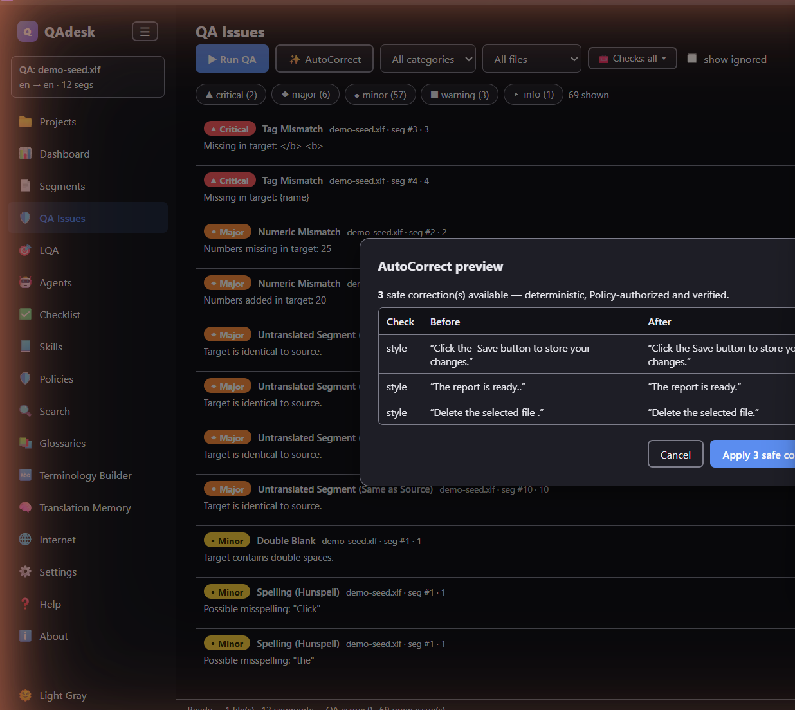

32 checks, one click
Numbers, inline tags & placeholders, punctuation, URLs, consistency, terminology, length, whitespace, Unicode — plus Hunspell spelling when a dictionary is loaded. Critical issues surface first.
Quality assurance for translators
QAdesk is a desktop app that reads your bilingual files, runs 32 quality checks in one click, scores them against your standards, and helps you fix errors fast — fully offline, on your machine, on your terms.
Free during Early Access · Windows 10/11 · No account · No cloud · No telemetry

You've translated the file. Now you have to prove it's right — every number, every tag, every term, across hundreds of segments. Miss one, and it's the client who finds it. QAdesk does the checking that a tired eye slides past.
Everything in one place
Numbers, inline tags & placeholders, punctuation, URLs, consistency, terminology, length, whitespace, Unicode — plus Hunspell spelling when a dictionary is loaded. Critical issues surface first.
Grade a file against a quality profile and get a straight verdict — PASS or FAIL — with the breakdown behind it. Turn a translation into a report you can hand a client with confidence.
Six built-in agents propose fixes, tell you how sure they are, and — with your permission — apply the certain ones and verify their own work. The judgement calls come to you.
Skills capture how a language or client should be handled. Policies set hard limits the agents can't cross. Banned terms and client feedback become checks that run on every file.
Attach term bases and translation memories, check terminology compliance, and run concordance searches — SDLTB and SDLTM included via built-in SQLite.
Export findings to Excel, PDF, HTML, CSV or JSON — or print directly. Every row carries the segment number and CAT-tool unit id, so anyone can locate it instantly.
See it in action



Four minutes, start to finish
Drop in whatever your CAT tool speaks — Trados, memoQ, Phrase, Wordfast, plain XLIFF, TMX, Excel, PO and more. Source and target line up in seconds.
One click runs all 32 checks across every segment, sorted so the critical issues come first.
Jump straight to any segment, step through issues, ignore false positives, and apply safe AutoCorrect fixes with one click and undo.
Score against an LQA profile and export a clean report — proof of quality you can deliver alongside the file.
Speaks your CAT tool
Bilingual export & conversion, write-back to the original file, and check-type filtering are built in.
Private by design
No account. No cloud. No telemetry. Everything runs locally — which matters when the work is medical, legal, or unreleased. Want an AI assistant? You can run one locally too, through Ollama. Powerful QA, entirely under your control.
“I'm a freelance translator, and I wanted a professional QA tool I actually control. So I built one.”
QAdesk is made by a working translator — a modern, offline take on the classic QA checker.
Free during Early Access — a single Windows installer, no account. Future versions will require a paid license.
Windows 10/11 · 64-bit · ~4 GB RAM · no GPU required